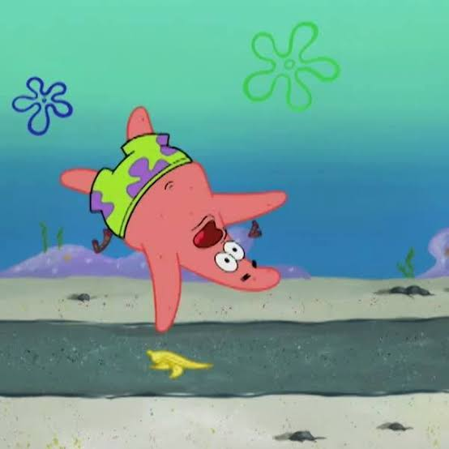

Welcome to the Chaos!

Comedic violence is a type of humour where characters experience ridiculous accidents, exaggerated fights, and impossible injuries.
Instead of being realistic or frightening, these situations are designed to make audiences laugh.
The Origins of Slapstick
Slapstick comedy has existed for centuries. It became especially popular in silent films and animated cartoons.
Characters could fall down stairs, collide with walls, or get hit by ridiculous objects and somehow survive!
Three Essential Slapstick Abilities
- Surviving impossible accidents
- Perfect comedic timing
- Recovering from cartoon explosions
Famous Cartoon Chaos
Tom and Jerry is a classic example of cartoon slapstick comedy.